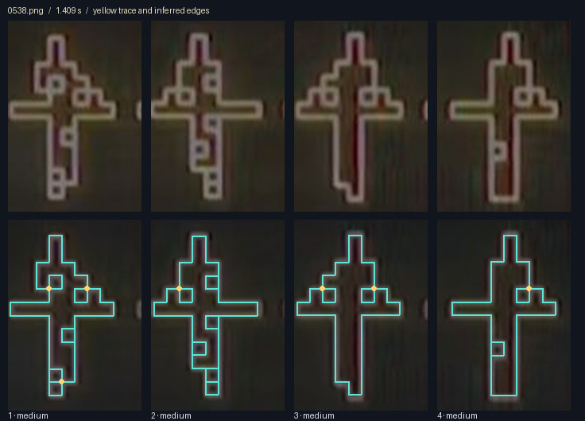

← Кадры и исходные глифы · Исследования · 13 ноября 2026 · 0.004 · исследовательский черновик
Можно ли развернуть глиф в одну линию?
Новая гипотеза: пунктирная нить из квадратов 1–0–1–0. Каждый переход, включая диагональный, — один шаг. Проверен пример со сменой фазы при возврате; маршрут исходного глифа ещё не найден.
Проверены четыре глифа в каждом из 19 опорных кадров — всего 76 графов. Рассматриваем все видимые жёлтые линии, включая внутренние перекладины, как линии нулевой толщины. Изгиб разрешён, повторное прохождение по участку запрещено. В месте встречи линий разрешён переход между ветвями.
В основной восстановленной модели одним штрихом проходят 18 из 76 глифов. У 19 рисунок распадается на компоненты, у ещё 39 связный рисунок имеет слишком много нечётных разветвлений. Если одного прохода нет, ниже показано минимальное число отдельных штрихов. Между ними оставлены разрывы.
Это точный расчёт по оцифрованным графам, а не точная оцифровка исходной анимации. На съёмке часть соединений неразличима. Решение «один штрих: да/нет» сохраняется при трёх порогах выделения в 73 случаях; меняется в 5/1, 7/1 и 8/3. Здесь запись 5/1 означает опорный кадр 05, глиф 1. Из 18 положительных результатов 16 сохраняются при всех трёх порогах. Прочие числа, включая количество пересечений, сохраняются одновременно только в 41 из 76 случаев. Более слабые линии нельзя автоматически считать существующими.
Почему линия иногда разрывается
У каждого ребра два конца. При проходе через внутреннюю точку мы по одной ветви приходим и по другой уходим: ветви расходуются парами. Поэтому у единого связного рисунка допускаются ноль нечётных точек — можно замкнуть линию — или две, которые станут началом и концом. Четыре и больше требуют нескольких штрихов либо повторения участка. Отдельные компоненты изгибанием соединить нельзя.
Пример: у первого глифа в кадре 05 квадратная «голова» отделена от тела. Это две замкнутые линии, и один непрерывный проход невозможен. Ослабление порога изображения может создать ложную перемычку; этот случай специально отмечен вопросом.
J — общее число разных точек, в которых встречаются три и более ветвей; J = X + B. Для одного прохода это точки повторного посещения, включая встречу конца линии с её ранее пройденной частью. X1, X2… — разные точки пересечения четырёх ветвей. Одинаковая метка повторяется на развёртке там, где маршрут снова посещает эту же точку. B1, B2… — точки с другим числом ветвей, обычно три. Углы из двух ветвей не считаются пересечениями. Метки нумеруются заново внутри каждого глифа.
Каждый цвет — отдельный штрих. Его длина пропорциональна числу клеточных рёбер выбранного графа. Глиф слева раскрашен теми же цветами. «к» означает замкнутый штрих: он разрезан для показа на прямой. Звёздочка у повторной конечной метки обозначает тот же разрез, а не дополнительное пересечение.
OR, AND или XOR для одной нити?
Разбор присланного глифа: OR сохраняет белые наложения; непрерывный маршрут требует двух коротких повторов. 49 разных рёбер, шесть Т-узлов: без дополнительных линий и повторов — три штриха; OR допускает единую нить с двумя повторами. AND с готовой маской позволяет скрыть две дополнительные соединительные дуги и пройти всю расширенную нить без повторов.
Одна белая нить: след по XOR
Открыть опыт с белой нитью: один замкнутый маршрут настоящего восстановленного глифа, 48 рёбер и две точки самопересечения. Первый круг оставляет 48 белых рёбер, второй гасит все, третий возвращает. В каждой точке пересечения два посещения за круг, поэтому сама точка чёрная. Обычный поворот считается одним посещением.
Здесь различаются физический маршрут нити и видимый след. Если позволить повторять участки, двойная соединительная дорожка может погаснуть и оставить раздельные белые петли. Но у рёбер, пройденных нечётное число раз одним непрерывным маршрутом, всегда ноль или две нечётные вершины: XOR не превращает любой разветвлённый рисунок в один штрих. Отдельное гашение идеальных точек пересечения не меняет этот подсчёт рёбер. Опыт ниже показывает повтор полного круга; скрытые соединительные дорожки в нём не добавлены.
Четыре развёрнутые строки для каждого кадра
Сверить с видеокадром и выделенными линиями
Верхний ряд — источник; нижний — извлечённый граф. Голубой: уверенно выделенное ребро; оранжевый: слабее; розовая точка: отклонённый слабый кандидат; золотая точка: четыре ветви. Это оценка яркости, не доказательство наличия соединения.

Все числа одним взглядом
В ячейке: J — все общие точки, X — четырёхветвевые / минимальное число штрихов. Знак ? — ответ об одном штрихе зависит от порога. Знак ~ — низкая различимость источника. Числа относятся к основной модели; варианты сохранены в данных.
Уточнение прежнего разбора
При анализе соединений четыре графа опорного кадра 18 (около 20,46 с) совпали с кадром 19 (около 20,60 с), с учётом переноса. Прежняя подпись о смешанном переходе в кадре 18 не подтверждается. Оба изображения сохранены как опорные. Смешанный набор около 19,19 с остаётся отдельным наблюдением. В выборке по-прежнему 17 устойчивых эпизодов и 19 опорных кадров.
Метод, доказательства и воспроизведение
На квадратной решётке подобраны положение и шаг линий; каждое потенциальное ребро получило оценку яркости по изображению. Основной порог 0,48; сравнения 0,36 и 0,60. Граф содержит только принятые рёбра: алгоритм обхода не соединяет компоненты и не добавляет перемычки. Отдельная модель границ заполненных клеток сохранена как диагностическая и не используется для основного вывода.
Анализатор проверен на 11 тестах, включая 400 случайных мультиграфов. Для всех 228 графов текущего набора отдельно проверены непрерывность каждого штриха, ровно однократное покрытие каждого ребра, минимальность числа штрихов и повторные посещения точек. При воспроизведении запустите node build-analysis.cjs, затем python render-lines.py и python build-page.py. В Python нужен Pillow; для повторного выделения — NumPy и OpenCV. Исходные опорные кадры находятся в соседней папке первого исследования.
Источник съёмки: Kraftwerk Koncert 2026 — Veszprém. Свойства оригинального генератора по этим графам не устанавливаются.